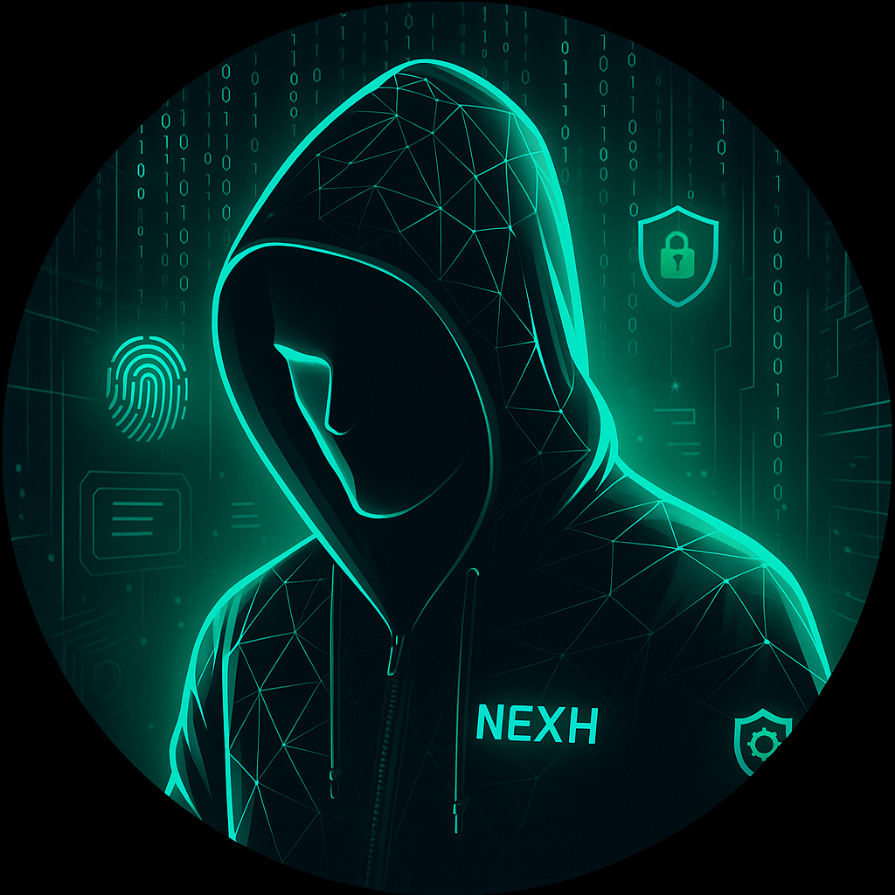

My Cybersecurity Skills
Firewall & Network Defense
Linux Command Line
Phishing Awareness
Data Encryption
Security Operations (SOC)
Cybersecurity Analyst & Ethical Hacker | xavieropurozor@gmail.com
I am a cybersecurity enthusiast with a passion for protecting systems and securing networks. With a solid foundation in ethical hacking, digital forensics, and network defense, I strive to build safer digital environments in a constantly evolving threat landscape.
Firewall & Network Defense
Linux Command Line
Phishing Awareness
Data Encryption
Security Operations (SOC)
To become a skilled cybersecurity professional, you need both theoretical and hands-on experience. Here's a step-by-step roadmap: